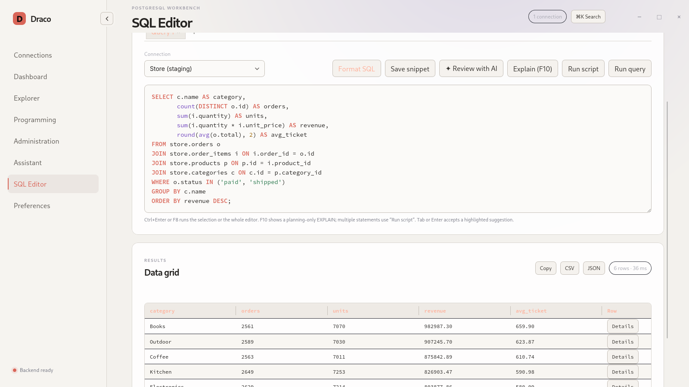
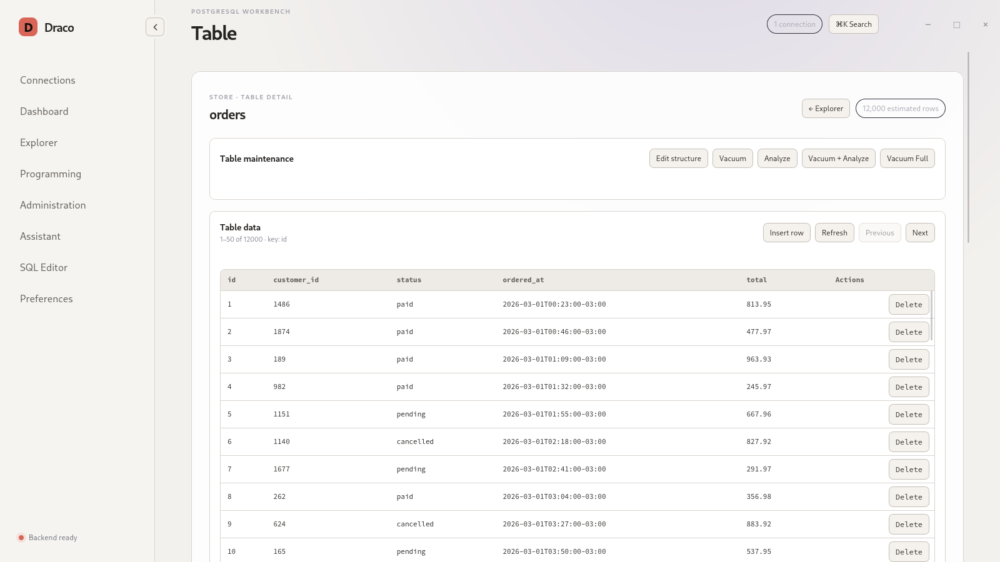
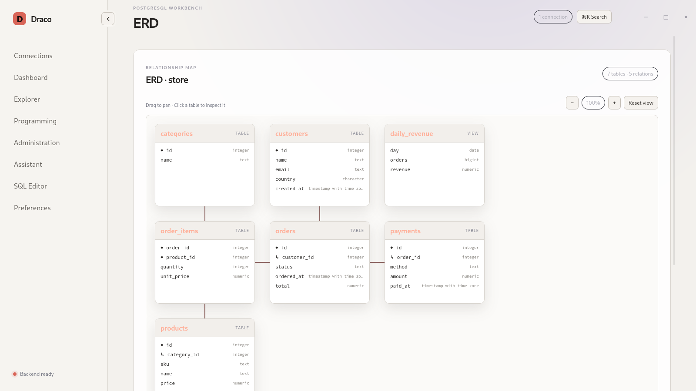
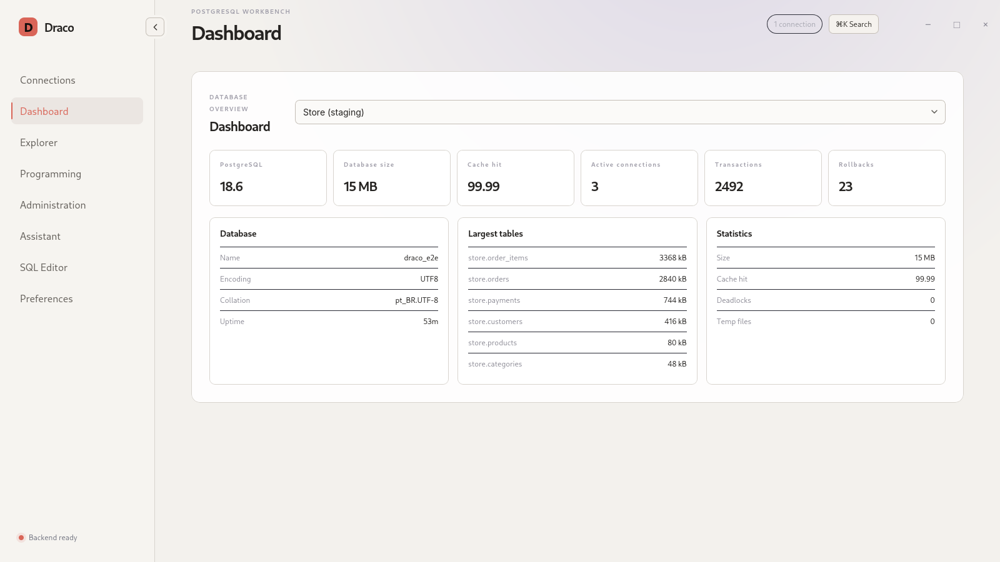
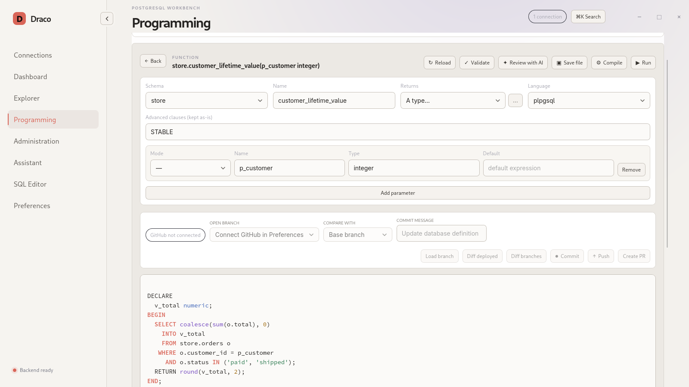

Editor SQL completo
Abas, highlighting, autocomplete a partir do schema, execução de query ou script, EXPLAIN e cancelamento direcionado ao backend da operação.
Cliente PostgreSQL gratuito · versão 2.1.4
O cliente PostgreSQL de código aberto para Linux e Windows que une
explorador de schemas, editor SQL e ferramentas de administração em
um app nativo, leve e livre — sem depender de psql para o dia a dia.
Recursos
Do primeiro SELECT à manutenção do servidor, em uma única janela.
Abas, highlighting, autocomplete a partir do schema, execução de query ou script, EXPLAIN e cancelamento direcionado ao backend da operação.
Navegação lazy por schemas, tabelas, views, funções, procedures, sequences e triggers, busca global e diagrama ER navegável.
Resultados virtualizados, detalhe de linha, cópia TSV, exportação CSV/JSON e edição paginada por chave primária.
Dashboard, Activity/Locks, roles, extensões, pg_cron, pg_stat_statements e manutenção com VACUUM/ANALYZE.
Editor dedicado para views, funções, procedures e triggers, com branches, diff contra o banco implantado, commit e pull request.
Anthropic, OpenAI ou Gemini por conexão, com ferramentas somente leitura e revisão de SQL quanto a segurança, performance e legibilidade.
Operações canceláveis com pg_dump, pg_restore e psql, com caminhos redigidos nos logs.
SSH e jump host feitos em processo com russh, sem chamar o executável ssh. TLS via rustls.
Telas
Capturas do app com um banco de exemplo fictício.





Segurança por padrão
O Draco Postgres foi desenhado para lidar com bancos reais de produção sem vazar segredos.
Download
Pacotes nativos da versão 2.1.4, gerados a partir de tag imutável.
O RPM oficial está no Open Build Service, no projeto
home:rodrigosbrito:lyra. Com o repositório adicionado, o
Zypper entrega as atualizações automaticamente.
sudo zypper addrepo https://download.opensuse.org/repositories/home:/rodrigosbrito:/lyra/openSUSE_Leap_16.1/home:rodrigosbrito:lyra.repo
sudo zypper refresh
sudo zypper install postgres-dracoO pacote se chama postgres-draco porque draco já
existe no openSUSE; o aplicativo instalado continua sendo o Draco.
Página do pacote no OBS →
git clone https://github.com/britors/Draco.git
cd Draco
cargo build --locked --release -p draco-tauri
./target/release/dracoPerguntas frequentes
Sim. O Draco Postgres é software livre, licenciado sob GPL-3.0-or-later, e pode ser usado sem custo inclusive em ambientes comerciais.
Há pacotes nativos para Ubuntu (.deb), Fedora e openSUSE (.rpm) e um instalador para Windows. Também é possível compilar a partir do código-fonte em qualquer distribuição Linux moderna.
Não. As queries usam um driver PostgreSQL nativo. Somente backup e restauração usam as ferramentas oficiais pg_dump, pg_restore e psql.
No cofre de credenciais do sistema operacional, como GNOME Keyring, KWallet ou Windows Credential Manager. O Draco Postgres nunca grava senhas em arquivos de configuração.
Não. O Assistente só inspeciona o banco com ferramentas somente leitura. Qualquer sugestão de SQL é apresentada como texto para revisão manual.